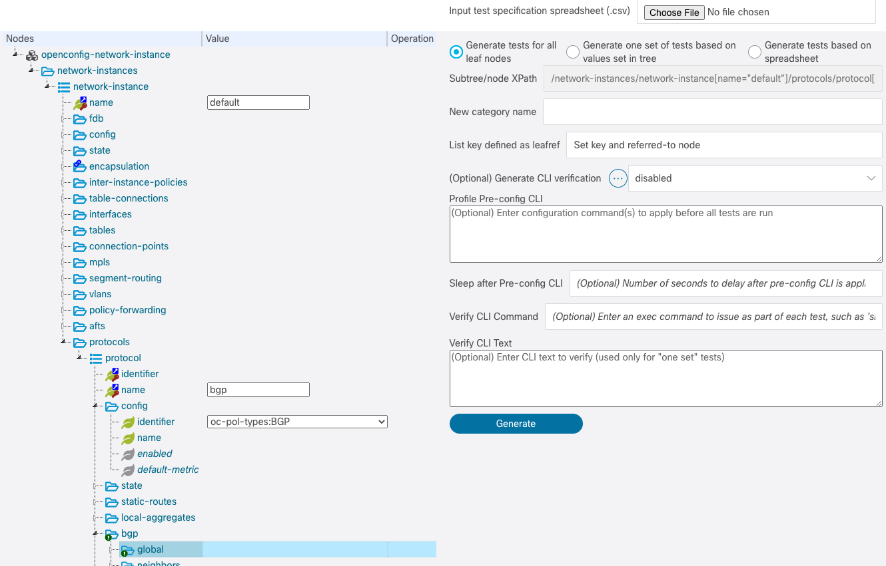
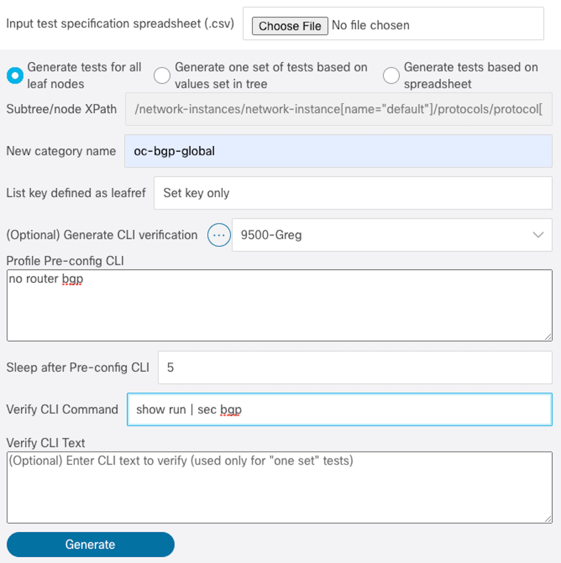

Generating collections of tests from a YANG model¶
What are replays?¶
In YANG Suite, a “replay” is a file that represents a particular operation or set of operations based on a particular YANG data model(s). This could be a NETCONF RPC, a gNMI request, etc. It is the smallest unit of a test.
If you have yangsuite-netconf installed, the documentation specific to
working with NETCONF replays is available here.
Generating tests automatically¶
While YANG Suite plugins such as yangsuite-netconf can be used to construct
individual replays ranging from very simple to extraordinarily complex,
yangsuite-yangtree itself is capable of automatically generating families
of simple replays, covering the typical operations (create, update, and delete;
or in NETCONF terms, create, merge, replace, delete, and remove) that are
applicable to each individual endpoint resource in a given YANG model. Using these
replays the yangsuite-testmanager logically constructs resource-by-resource tests.
- create - creates a resource
- merge - merges same resource
- replace - replaces value of same resource
- delete - merges value of same resource then deletes the resource
- remove - merges value of same resource then removes the resource
move to next resource and create next set of tests …
From the “Operations → Generate Tests” page, several options are presented but the most important to note are the 3 types of test generation choices (which are explained in more detail).
- Generating tests for all nodes
- Generate one set of tests based on the values set in the tree
- Generate tests based on spreadsheet
Generating tests for all nodes¶
While it’s possible to generate tests for an entire YANG model in a single pass, for YANG models that have a non-trivial number of leaves, this may result in an overwhelming number of tests being created. Thus, you may want to operate on a particular subtree of a given model to make the test sets more managable.
After loading the desired YANG Set and module(s) (refer to Exploring YANG Models if you aren’t already familiar with this process), navigate to and select the root node of the desired subtree. The XPath will be displayed to the right in the “Subtree/node Xpath” input field. You have the option to add values to the tree before you generate replays. It is highly recommended that you fill in any values that will be required to make the tests successful because if you don’t, YANG Suite will take a guess at what may work according to the YANG module definitions. Most notable are enums, key values, and required string names. In the example below, the identifier is set to oc-policy-types:BGP because the tests are focussed on the BGP protocol.
Generate one set of tests based on the values set in the tree¶
With this choice, you can create a complex YANG test based on several node values. Expand the tree and set all the values you want included in the test. YANG Suite will only choose the set node values and create one set of the 5 edit tests in pyATS Genie Quick Trigger format and a CSV file.
Generate tests based on spreadsheet¶
Generating sets of tests outputs a CSV file containing the information generated. Now that you have your CSV files, you can combine CSV files, change values for failed tests remove tests, add new tests, or create one from scratch following the format. After that, load the yangset/module relating to the tests, input the CSV file, and generate. See Reusing the CSV File for more information.
Detail of settings¶
Input test specification spreadsheet (.csv)- If you choose Generate tests based on spreadsheet, tests will be generated based on the content of the spreadsheet. All other settings are ignored.New category name- You will need to specify the name of a new category to create to store these replaysList key defined as leafref- OpenConfig models implement a definition that is questionable wether it complies with RFC 7950 regarding leafref definitions. They define keys to many list nodes as leafref, yet, the value of the leafref is contained in the list entry itself. This creates a catch 22 situation where, in order to identify a list entry, you need the value of the key, but, the value of the leafref key is stored in the value space of the referred-to node inside the list entry. You see the delema. Common models can be mapped to Cisco native models according to what the engineers mapping the models decide on. An option has been added named “List key defined as leafref” and you have 3 choices to cover all possibilities:- Set key and referred-to node (both when the list entry is created)
- Set the key only (ignoring the referred-to node value)
- Set referred-to node (ignore the key value)
In the example, you can see the identifier key “referred-to” node enum value was chosen even though “Set key only” is set. YANG Suite will look to the referred-to node in this case and set that enum value in the key because there is not a value already set at the key location.
Generate CLI verification- Generating CLI verification can be done by chooseing a device profile. It is best to choose this option after fixing a set of generated tests in the CSV file and then Generate tests based on spreadsheet. After a test is generated, theVerify CLI Commandis sent and a snapshot of the output is saved. Then the test NETCONF message is sent, another snapshot is collected, and the difference between the before and after output is saved in the test as CLI verification. Make sure your device profileSSH Delay factoris set high enough for slower devices otherwise you will not capture the entire output.Profile Pre-config CLI- Enter required device configuration needed before tests begin.Sleep after Pre-config CLI- Number of seconds to delay after Pre-configs have been applied.Verify CLI Command- A show command that returns the configuration of the model feature (default is “show running”).Verify CLI Text- Expected output relating to tests. This is only valid if you Generate one set of tests based on the values set in the tree.
Test Files¶
Click “Generate”. After a few moments, a dialog will pop up displaying the number of replays generated and any issues encountered.
You will receive a zip file uploaded to your browser named after the category.
The zipfile contents:
- CSV file that can be viewed using “Numbers” or “Microsoft Excel”
- pyATS testbed YAML file
- pyATS Python job file
- pyATS Genie Quick Trigger mapping YAML file
- pyATS Genie Quick Trigger test YAML file
- Variable YAML file (extended by the test file)
See pyATS Genie Quick Trigger for details about testing with the pyATS files.
Reusing the CSV File¶
Open the CSV file and you will see a summary of all the important content generated for the tests such as xpath, nodetype, datatype, values, cli verification, etc… That CSV file can act as a template to generate new tests. After running the generated tests, you may have failures because the generator did not pick a value that will work, or, you may want to add CLI verification for the tests. Rather than going into the details of the tests with an editor, just modify the values in the CSV file and regenerate. See Generate tests based on spreadsheet.
The generate_test CLI script¶
The generate_test CLI script generates test from the command line:
$ generate_test --help
usage: replaygenerator.py [-h] [-u USER] (--yangset SETNAME | -d PATH) -m
MODULE [-x XPATH] -c CATEGORY [-o OUTPUT_PATH]
[-csv CSV_PATH] [-dp DEVICE_PROFILE]
[-ds DATA_STORE] [-pr PRECONFIG_CLI]
[-po POSTCONFIG_CLI] [-vc VERIFY_CLI]
[-vd VERIFY_DEVICE] [-cs PRE_CFG_SLEEP]
optional arguments:
-h, --help show this help message and exit
-u USER, --user USER YANG Suite user name (optional)
--yangset SETNAME, --ys SETNAME
YANG set to load modules from (optional)
-d PATH, --directory PATH
Directory of YANG files to load
-m MODULE, --module MODULE
Name of YANG module to generate tests for
-x XPATH, --xpath XPATH
XPath of subtree to generate tests for. If omitted,
will generate tests for the entire module, which may
be very time-consuming.
-c CATEGORY, --category CATEGORY
Category name to group tests by.
-o OUTPUT_PATH, --output-path OUTPUT_PATH
Directory to output test files to. If omitted a
temporary location will be printed
-csv CSV_PATH, --csv-path CSV_PATH
CSV file path/filename for tests generated based on
CSV file
-dp DEVICE_PROFILE, --device-profile DEVICE_PROFILE
Device profile defined in YANG Suite server (optional)
-ds DATA_STORE, --data-store DATA_STORE
YANG datastore target (optional)
-pr PRECONFIG_CLI, --preconfig-cli PRECONFIG_CLI
`Text file of CLI pre-configuration needed prior to
running tests (optional).
-po POSTCONFIG_CLI, --postconfig-cli POSTCONFIG_CLI
Text file of CLI post-configuration to clean up
testbed after running tests (optional).
-vc VERIFY_CLI, --verify-cli VERIFY_CLI
CLI show command used to verify correct CLI after YANG
messaging is sent.If '--verify-device' exists,
generator willattempt to add verification CLI,
otherwise,user must add CLI verification to each test
after generation (default: 'show running').
-vd VERIFY_DEVICE, --verify-device VERIFY_DEVICE
During test generation, device willcall '--verify-cli'
command and determinechanges to configuration. The
differencewill act as the verification CLI for the
test (optional).
-cs PRE_CFG_SLEEP, --pre-cfg-sleep PRE_CFG_SLEEP
Seconds to pause after '--preconfig-cli'is applied
(optional).
For example:
generate_test \
--user admin \
--yangset ios-xe-16-10-1 \
--module openconfig-interfaces \
--category "openconfig-interfaces config" \
--output_path "/home/myusername" \
--xpath "/interfaces/interface/config"
See Test Files for a description of the zipfile output.